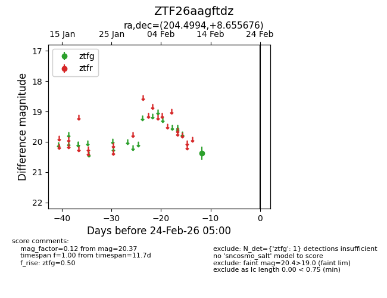
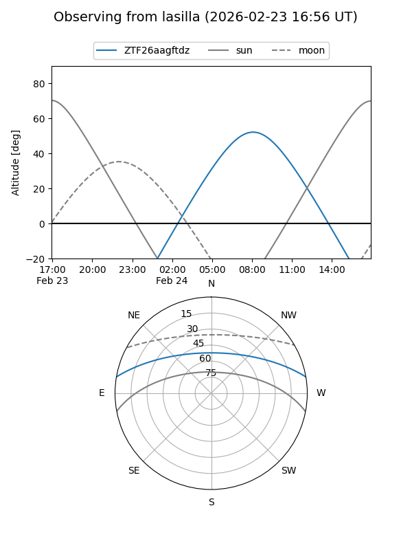
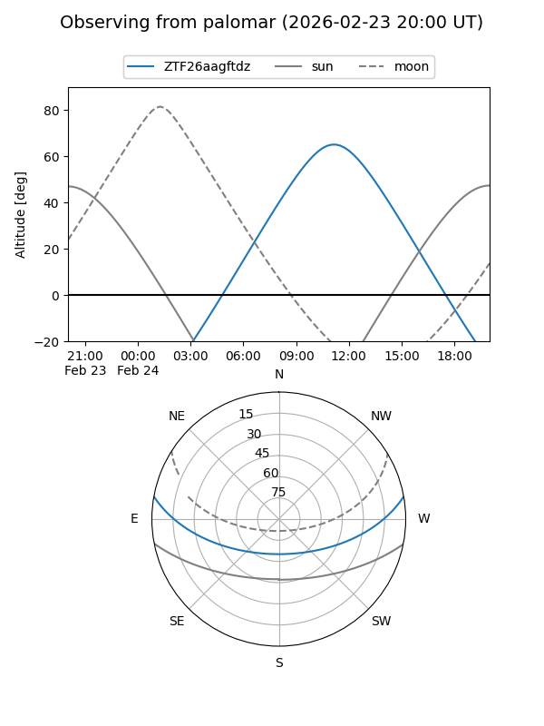

ZTF26aagftdz
Target ZTF26aagftdz at 2026-02-24 09:08
Aliases and brokers:
FINK: link
Lasair: link
ALeRCE: link
alt names
ZTF26aagftdz (ztf,fink_ztf)
Coordinates:
equatorial (ra, dec) = 204.4994,+8.65568
equatorial (HMS+DMS) = 13:37:59.86,+08:39:20.43
galactic (l, b) = (335.8949,+68.49431)
Flags:
Photometry:
last ztfg=20.37
1 ztfg detections
Lightcurve

Visibility


Additional plots